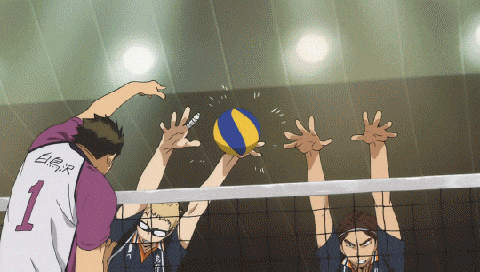

Coach/Faculty advisor
Coaches are the people in charge of the team. They make all the big decisions for the team,
like submitting line-ups, calling time-outs, communicating with referees, etc. They are in charge of the
training and building strategies for the team. Coaches are usually former players themselves, so they have
experience with multiple aspects of the game. They are able to assess from the sideline and decide what changes
need to be made, they then tell the player that needs to know or they tell the captain who then relays the
message to whoever needs to know.
 They constantly coach the team by teaching them new methods and conducting
frequent practice matches with both each other and other teams
They constantly coach the team by teaching them new methods and conducting
frequent practice matches with both each other and other teams
Faculty advisors are responsible for the team overall. They do not coach or take care of the
players' necessities, though some advisers help arrange practice matches or buy new uniforms for the teams.
Advisers' jobs are to look after the team and make sure the team is active, communicate with the school and the
players' teachers, etc. They may also be teachers themselves, so they also keep track of players' academic
performances.
Managers
Managers are responsible for the well-being of the team. They record statistics of team-play,
refill the players' water bottles, help with injuries, provide food occasionally, and cheer the players on.
Managers attend official matches along with the team, but only one manager is allowed to be on the bench with
the coach and advisor.
Setters
Setters orchestrate the attacks. They are the playmakers of the volleyball team and are
analogous to point
guards and quarterbacks. Their responsibilities are to run the team's attacks and build up potential scoring
opportunities for the team. They aim for the second touch and their main responsibility is to place the ball in
the air for the attackers to send into the opponents' court for a point.
They play both front row and back row; therefore they need to be able to both block (defending) and serve
(attacking). They have to be able to operate with the spikers, manage the tempo of their team's side of the
court, and choose the right attackers to set to. Setters need to be able to make quick and skillful evaluations,
good communication skills and tactical accuracy and must be quick enough to move around the court.
Middle blockers
Middle Blockers are also known as Middle Hitters.

For defending, middle blockers are near the net in the middle of the court, between the two outside blockers.
They are primarily responsible for blocks, meaning they must attempt to stop equally fast plays from their
opponents and be able to quickly set up a double block at the sides of the court.
For attacking, middle blockers perform very fast attacks that usually take place near the setter. They will
usually hit quick sets or serve as decoys to confuse the opponents' blockers if their passes are good enough.
Wing spiker
Wing Spikers are the players who carry the serve receive responsibility along with the libero.
They are usually
the ones who attack with the ball, which the setter sets to the antenna at either the left or right side of the
court, and usually scores the most points in the game. Spikers play both the front row and the back row.
Wing spikers are generally divided into two types:
Left-Wing Spikers
Also known as Left-side Hitters or Outside Hitters, attack from near the left antenna. The outside hitter is usually the most consistent hitter on the team and gets the most sets. Inaccurate first passes usually result in a set to the outside hitter rather than the middle or opposite. Since most sets to the outside are high, the outside hitter may take a longer approach, always starting from outside the court sideline. For a non-beginners play, there are again two outside hitters on every team in every match.Right-Wing Spikers
Also known as Right-side Hitters or Opposite Hitters, carry the defensive workload for a volleyball team in the front row. Their primary responsibilities are to put up a well-formed block against the opponents' outside hitters and serve as a backup setter. Sets to the opposite usually go to the right side of the antennae. There are two types of Opposite Hitters that teams generally use; in ordinary high school formations, the Opposite Position is given to Defensive Specialists with an overall balance play, while in professional formations, the Opposite Position is given to spikers with an overall immense Offensive capabilities, they tend to not receive or block, just attack.Libero
Liberos are exclusively defensive positions. They are responsible for receiving an attack or
serve and are usually the players on the court with the quickest reaction time and best passing skills. They
also showcase impressive reading skills, meaning they can see/predict where the ball will go. Libero
means 'free' in Italian because liberos have the ability to substitute for any other player on the court during
each play. However, they can't be switched in/out with the player about to serve or be switched in/out during
a rally. Once a libero is switched out, they must remain off the court for a point before returning to the court
which is accomplished if they are switching for someone after they are done the serving.

Liberos only play in the back row and are often the pillar of the defense. If a team is struggling with
receiving, they will often try to find a way to change their formation in order to give the libero more court to
cover or direct the ball to the libero to improve their chances of receiving the ball well. They have to wear a
contrasting color compared with the rest of the team since the switch they make is considered an illegal
substitution for other positions. Due to the rules, they can't
become captain, though liberos often have the qualities of a captain. A libero can pass a ball to a
spiker, but he or she must follow specific rules; otherwise, it's a penalty. The rule that is addressed most in
the anime is the rule stating a libero can't make an overhand toss to a spiker if they step over the ten-foot
line (in the anime liberos get around this by jumping over the line and tossing before they land).